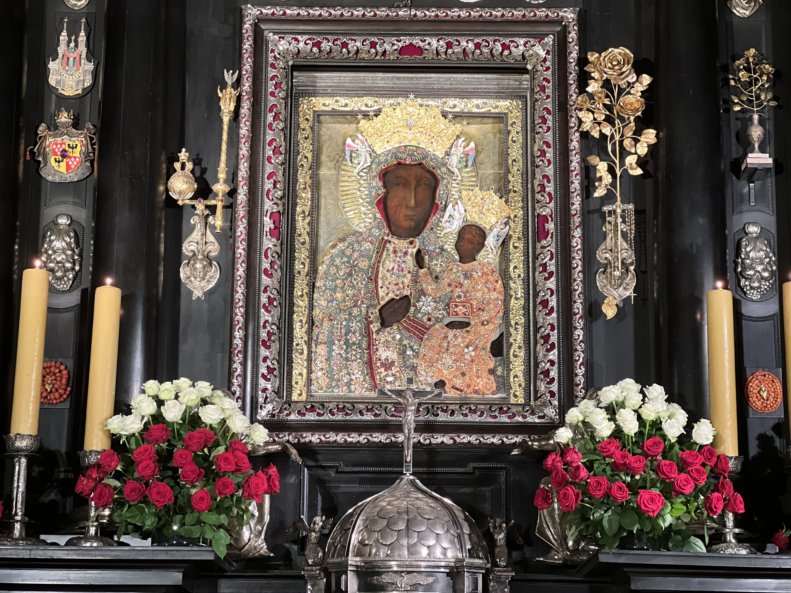

Pieśni maryjne

Bogurodzica (Pierwszy polski hymn narodowy)
Bogurodzica, dziewica, Bogiem sławiena Maryja!
U twego syna, Gospodzina, matko zwolena Maryja!
Zyszczy nam, spuści nam.
Kirielejson.
Twego dziela Krzciciela, bożycze,
Usłysz głosy, napełni myśli człowiecze.
Słysz modlitwę, jąż nosimy,
A dać raczy, jegoż prosimy,
A na świecie zbożny pobyt,
Po żywocie rajski przebyt.
Kirielejson.
Witaj Królowo, Matko Miłosierdzia
Witaj, Królowo, Matko miłosierdzia,
życia, słodyczy i nadziejo nasza, witaj!
Do Ciebie wołamy wygnańcy, synowie Ewy;
do Ciebie wzdychamy jęcząc i płacząc na tym łez padole.
Przeto, Orędowniczko nasza,
one miłosierne oczy Twoje na nas zwróć,
a Jezusa, błogosławiony owoc żywota Twojego,
po tym wygnaniu nam okaż.
O łaskawa, o litościwa, o słodka Panno Maryjo!